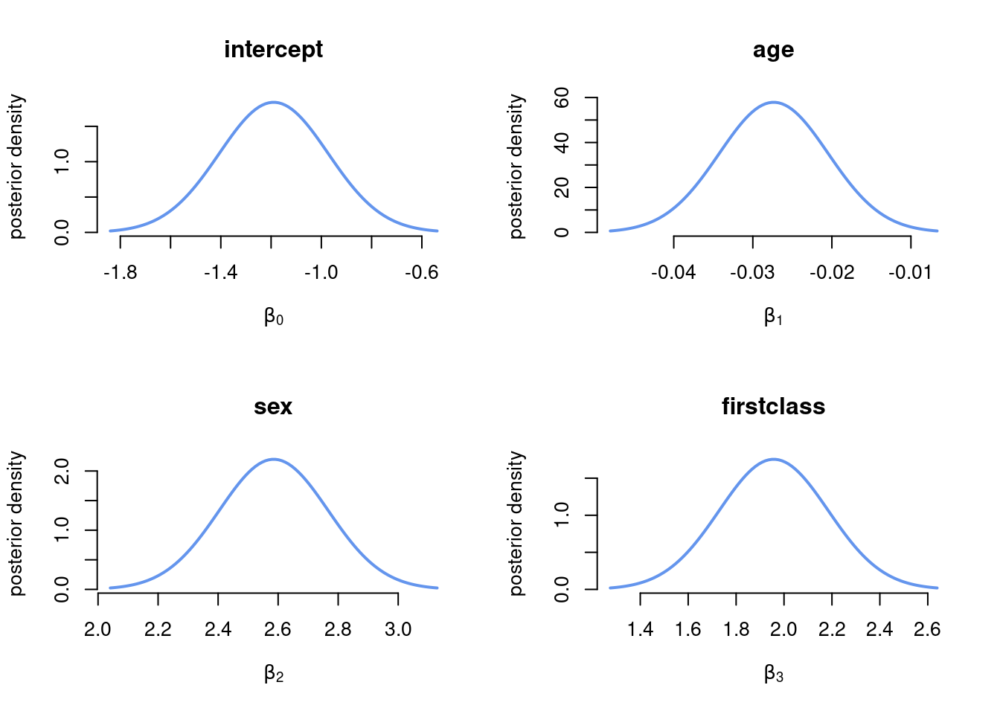
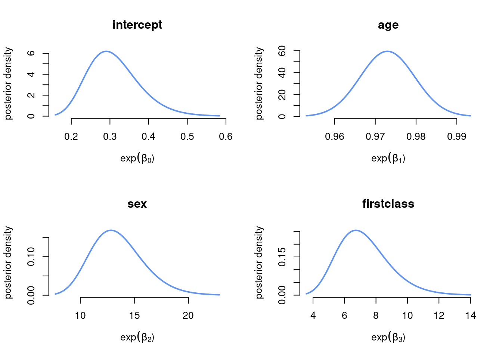

library(mvtnorm) # package with multivariate normal density
library(latex2exp) # latex maths in plotsBayesian logistic regression for the Titanic data
Load packages
Settings
tau <- 10 # Prior std beta~N(0,tau^2*I)Read data and set up prior
df <- read.csv(
"https://github.com/mattiasvillani/introbayes/raw/main/data/titanic.csv",
header=TRUE)
y <- as.vector(df[,1])
X <- df[,c(5, 4, 2)]
X[, 2] <- 1*(X[,2] == "female")
X[, 3] <- 1*(X[,3] == 1)
X <- as.matrix(cbind(1,X))
p <- dim(X)[2]
varNames = c("intercept", "age", "sex", "firstclass")
# Setting up the prior
mu <- as.vector(rep(0,p)) # Prior mean vector
Sigma <- tau^2*diag(p)Coding up the log posterior function
LogPostLogistic <- function(betaVect, y, X, mu, Sigma){
p <- length(betaVect)
linPred <- X%*%betaVect
logLik <- sum( linPred*y - log(1 + exp(linPred)))
logPrior <- dmvnorm(betaVect, matrix(0,p,1), Sigma, log=TRUE)
return(logLik + logPrior)
}Finding the mode and observed information using optim
initVal <- as.vector(rep(0,p));
OptimResults<-optim(initVal, LogPostLogistic, gr=NULL, y, X, mu, Sigma,
method = c("BFGS"), control=list(fnscale=-1), hessian=TRUE)
postMode = OptimResults$par
postCov = -solve(OptimResults$hessian) # inv(J) - Approx posterior covar matrix
postStd <- sqrt(diag(postCov)) # Approximate stdevPlot the marginal posterior of \(\beta\)
Since we have approximated the joint posterior \(\boldsymbol{\beta}\) as multivariate normal, the marginal posterior for each \(\beta_j\) is univariate normal.
par(mfrow=c(2,2))
for (j in 1:4){
gridVals = seq(postMode[j] - 3*postStd[j], postMode[j] + 3*postStd[j],
length = 100)
plot(gridVals, dnorm(gridVals, mean = postMode[j], sd = postStd[j]),
xlab = TeX(sprintf(r'($\beta_%d$)', j-1)), ylab= "posterior density",
type ="l", bty = "n", lwd = 2, col = "cornflowerblue", main =varNames[j])
}
Plot the marginal posterior of the odds \(\exp(\beta)\)
Since the marginal posterior for each \(\beta_j\) is approximated as normal, the approximate posterior distribution for the odds \(\exp(\beta_j)\) is log-normal.
par(mfrow=c(2,2))
for (j in 1:4){
gridVals = exp(seq(postMode[j] - 3*postStd[j], postMode[j] + 3*postStd[j],
length = 100))
plot(gridVals, dlnorm(gridVals, meanlog = postMode[j], sdlog = postStd[j]),
xlab = TeX(sprintf(r'($\exp(\beta_%d$))', j-1)), ylab= "posterior density",
type ="l", bty = "n", lwd = 2, col = "cornflowerblue", main = varNames[j])
}